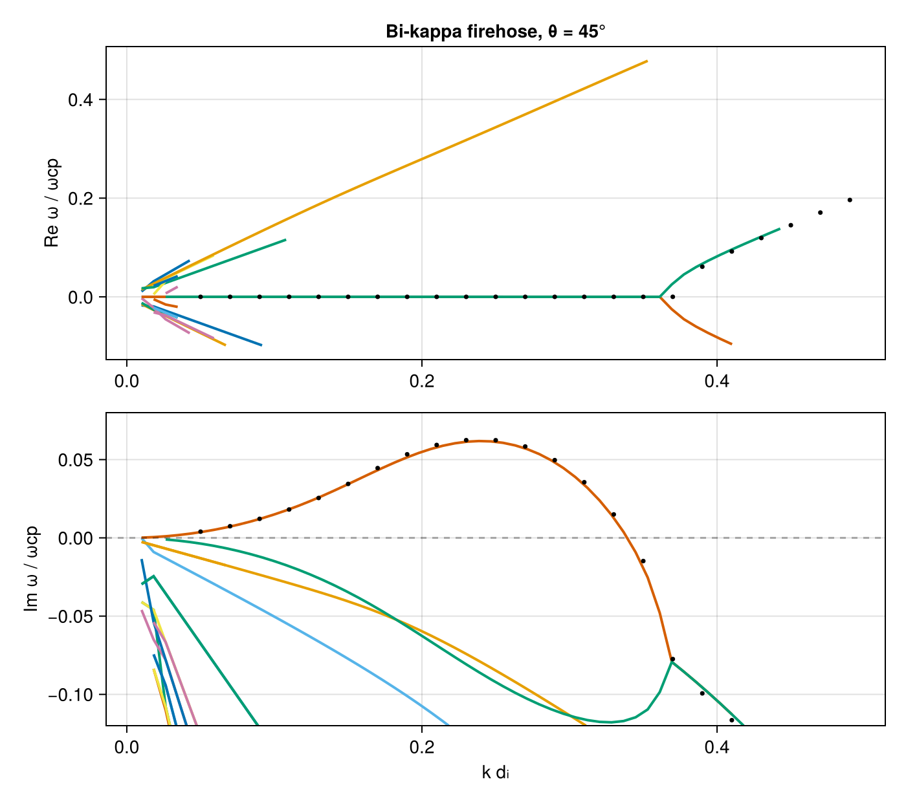

Firehose instability — bi-kappa protons (Astfalk 2017)
The proton parallel firehose driven by T∥ > T⟂ in a product bi-kappa distribution, after the PlasmaBO.jl case (Astfalk & Verscharen 2017 parameters): Maxwellian electrons plus κ = 5.5 bi-kappa protons with T∥p = 2 T⟂p at θ = 45°, so β∥p = 4, β⟂p = 2.
using VlasovMaxwellDispersion
using DelimitedFiles, Printf
using CairoMakiePlasma setup
SI parameters, normalized to the proton gyrofrequency ωcp; velocities in units of c. VMD's ProductBiKappa uses temperature-preserving θ's, so the same vth = √(2qT/m) maps both codes onto the identical distribution.
const c0 = 2.99792458e8
qe = 1.602176634e-19; mp = 1.67262192369e-27; me = 9.1093837015e-31
eps0 = 8.8541878128e-12; mu0 = 1.25663706212e-6
B0 = 0.1; θ = deg2rad(45); n = 5.0e19
Te = 496.683; Tpz = 1986.734; Tpp = 993.367; κ = 5.5
wcp = qe * B0 / mp
Pi2p = n * qe^2 / (eps0 * mp) / wcp^2
Pi2e = n * qe^2 / (eps0 * me) / wcp^2
vthpz = sqrt(2qe * Tpz / mp) / c0
vthpp = sqrt(2qe * Tpp / mp) / c0
vthe = sqrt(2qe * Te / me) / c0
vdf_p = ProductBiKappa(vth_para = vthpz, vth_perp = vthpp, kappa_para = κ, kappa_perp = κ)
plasma = (
NormalizedSpecies(1.0, Pi2p, vdf_p),
NormalizedSpecies(-mp / me, Pi2e, Maxwellian(vthe)),
)(NormalizedSpecies{Float64, Separable{Kappa{Float64, Float64}, Kappa{Float64, Float64}}}(1.0, 944537.1834511934, Separable{Kappa{Float64, Float64}, Kappa{Float64, Float64}}(Kappa{Float64, Float64}(9.528475921656928e-6, 5.5), Kappa{Float64, Float64}(2.1174390937015396e-5, 5.5))), NormalizedSpecies{Float64, Separable{Gaussian{Float64, Nothing}, Gaussian{Float64, Float64}}}(-1836.1526734400013, 1.734314474557398e9, Separable{Gaussian{Float64, Nothing}, Gaussian{Float64, Float64}}(Gaussian{Float64, Nothing}(0.04409046120672865, nothing), Gaussian{Float64, Float64}(0.04409046120672865, 0.0))))Seedless survey
k is swept over k·dᵢ ∈ [0.05, 0.5] (dᵢ = c/ωpp = vA/ωcp); the ω box straddles the real axis to capture the growing firehose branch together with the damped modes around it.
vA = B0 / sqrt(mu0 * n * mp)
kunit = c0 / vA # k·dᵢ → k c/ωcp
region = (-0.1 - 0.15im, 0.5 + 0.12im)
geom = AngleSweep(k = (0.01, 0.5) .* kunit, theta = θ)
sol = solve(GlobalDispersionProblem(plasma, region, geom), AAA())SurveySolution(retcode=:Success, 18 roots, 29514 evals, 11.0 s)Verification against PlasmaBO
Compare the growth-rate curve: at each reference k with γ_ref > 0.005 ωcp, the largest Im ω over all surveyed roots. The reference (firehose_astfalk17_ref.tsv) is the unstable branch tracked by PlasmaBO's Hermite–Hermite solver (N = 2, J = 24).
ref = readdlm(joinpath(@__DIR__, "firehose_astfalk17_ref.tsv"); comments = true)
kdi(b) = [sqrt(abs2(k)) / kunit for k in b.k]
Δmax = 0.0
for r in eachrow(ref)
r[3] > 0.005 || continue
γ = maximum(
maximum((imag(ω) for (x, ω) in zip(kdi(b), b.omega) if abs(x - r[1]) < 0.004); init = -Inf)
for b in sol.roots
)
global Δmax = max(Δmax, abs(γ - r[3]))
@printf("k·di=%.2f γ_ref=%.4f γ_vmd=%.4f Δ=%.1e\n", r[1], r[3], γ, abs(γ - r[3]))
end
Δmax0.003602005557419574The curves agree to a few 10⁻³ ωcp — the truncation level of the reference's Hermite–Hermite expansion of a sampled distribution, while VMD evaluates the analytic bi-kappa susceptibility (residuals ~10⁻¹²).
Dispersion diagram
The non-propagating firehose branch (Re ω ≈ 0, Im ω > 0 for k·dᵢ ≈ 0.07–0.34) among the damped branches; black dots: PlasmaBO track.
fig = Figure(size = (700, 620))
axr = Axis(fig[1, 1]; ylabel = "Re ω / ωcp", title = "Bi-kappa firehose, θ = 45°")
axi = Axis(fig[2, 1]; xlabel = "k dᵢ", ylabel = "Im ω / ωcp")
palette = Makie.wong_colors()
for (i, b) in enumerate(sol.roots)
col = palette[mod1(i, length(palette))]
x = kdi(b)
p = sortperm(x)
lines!(axr, x[p], real.(b.omega)[p]; color = col, linewidth = 2)
lines!(axi, x[p], imag.(b.omega)[p]; color = col, linewidth = 2)
end
scatter!(axr, ref[:, 1], ref[:, 2]; color = :black, markersize = 5)
scatter!(axi, ref[:, 1], ref[:, 3]; color = :black, markersize = 5)
hlines!(axi, [0.0]; color = (:black, 0.3), linestyle = :dash)
ylims!(axi, -0.12, 0.08)
fig
This page was generated using Literate.jl.